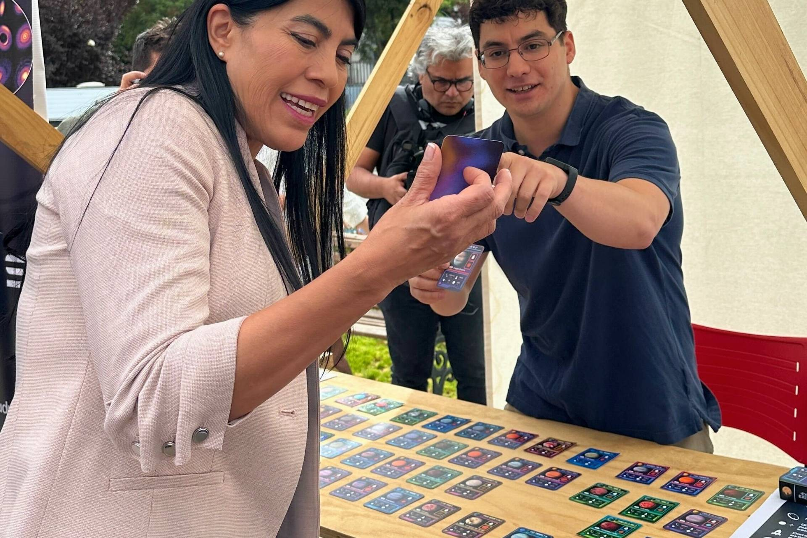
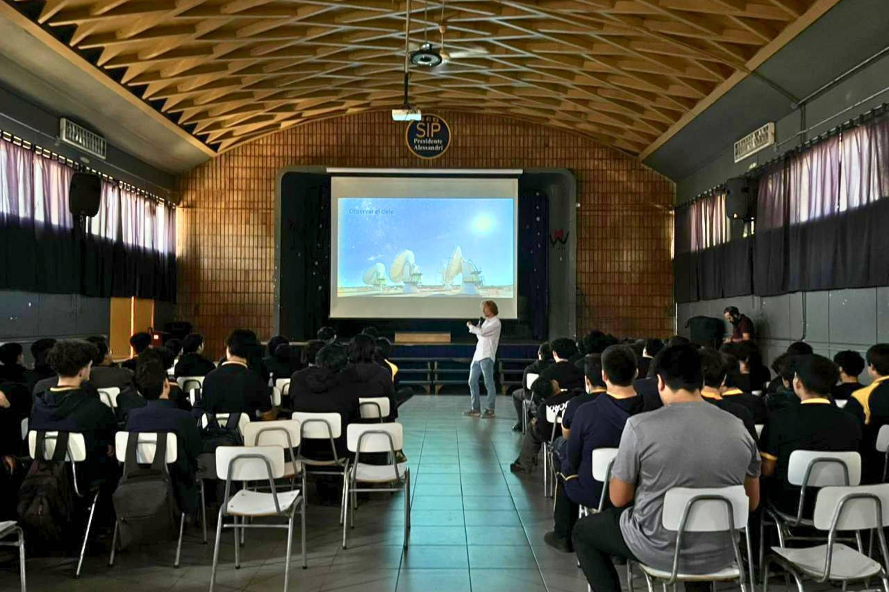
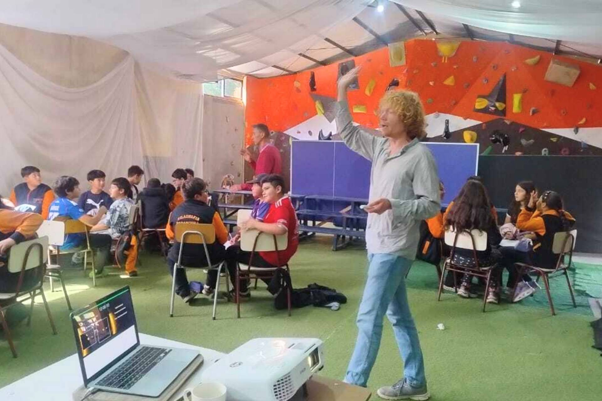
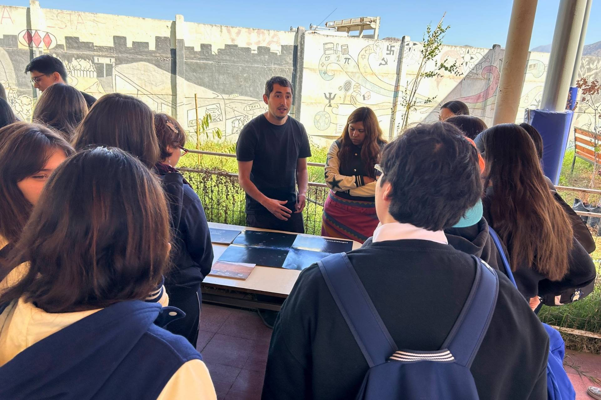
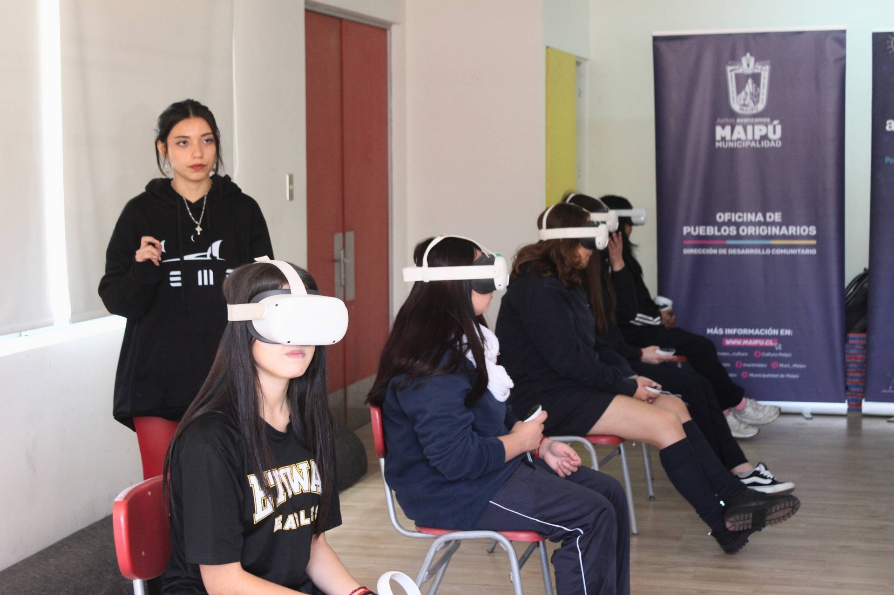
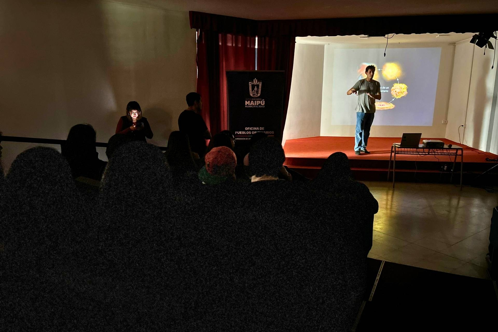

Outreach activities led by Millennium Nucleus YEMS.

Talks, workshops, science fairs and interactive activities across Chile marked the active participation of Millennium Nucleus YEMS in the 2026 Astronomy Day Week celebrations.
During March, researchers and students from the Millennium Nucleus on Young Exoplanets and their Moons (YEMS) rolled out a diverse programme of science outreach activities, bringing astronomy to school communities and the general public from the Los Lagos Region to the Metropolitan Region.
Researcher Philipp Weber led an extensive tour of southern Chile, visiting schools in Frutillar, Valdivia, Villarrica and Panguipulli, as well as delivering public talks in Puerto Montt and Puerto Varas. His presentations, focused on an introduction to astronomy and exoplanets, brought students and local communities together around fundamental questions about the origin of planetary systems.
In Santiago, the USACH Planetarium was one of the main meeting points, with a programme that included talks, workshops and interactive activities. Highlights included the musical talk "Pato Falso" presented by Weber, as well as the talk "What happened to Pluto?" given by Marcela Best. Workshops were also held, including the "Exoplanet Creation Laboratory", led by student Josefina Córdova, along with interactive stands designed to bring astronomy concepts closer through games and play-based experiences.
YEMS participation also included activities at schools in the Metropolitan Region, such as Colegio Peñalolén, where a session was held combining talks, exoplanet exploration and science outreach activities. These events involved Marcela Best, Ian Rickmers, Fernando Castillo and Weber again, reflecting the collaborative nature of the nucleus.
Other initiatives included talks at schools such as the Liceo Bicentenario de Niñas de Maipú, by Gioele Di Lernia, and presentations at schools in Independencia and Lo Barnechea, along with open activities such as the astronomy fair in Padre Hurtado, where YEMS students participated actively in bringing science to the community.
Together, these activities reflect YEMS's commitment to science outreach and the education of new generations, promoting access to astronomical knowledge across different territories and educational contexts. Astronomy Week was thus consolidated as a key opportunity to strengthen the link between frontier research and society.
Outreach activities led by Millennium Nucleus YEMS.
Talks, workshops and interactive activities at the USACH Planetarium.

Outreach activities in different regions of the country.

Participation of students, researchers and local communities.

Exploring the universe through educational and play-based experiences.

Community engagement during Astronomy Day Week.

YEMS bringing astronomy to new audiences across Chile.

YEMS researchers reaching diverse educational contexts.
{kind=link}
{kind=link}
{kind=link}
{kind=link}
{kind=link}
{kind=link}